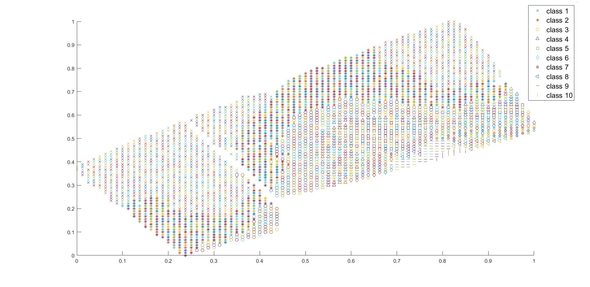

This is a personal website showcasing my research and projects.
Developed a machine learning model to predict soil parameters using counter-propagation neural networks.
Analyzed the severity of car accidents based on environmental and ambient factors using machine learning techniques.
Utilized the R-INLA package and SPDE approach to develop predictive models for malaria spread.
Explored text classification challenges and annotation schemes to analyze antisemitic content on Twitter using natural language processing (NLP) techniques.
Studied buckling behavior using the finite element method (FEM) based on nonlocal elasticity theory.
Investigated nanoplate vibrations using the couple stress theory and finite element modeling.
Contributed to the design and optimization of a battery-powered bus, focusing on energy efficiency and structural durability.
Examined how different boundary conditions influence the natural frequency of composite skew nanoplates embedded in an elastic medium using the Generalized Differential Quadrature (GDQ) method.
Modeled elastic-plastic buckling behavior in circular plates with variable thickness, evaluating key structural parameters affecting stability.